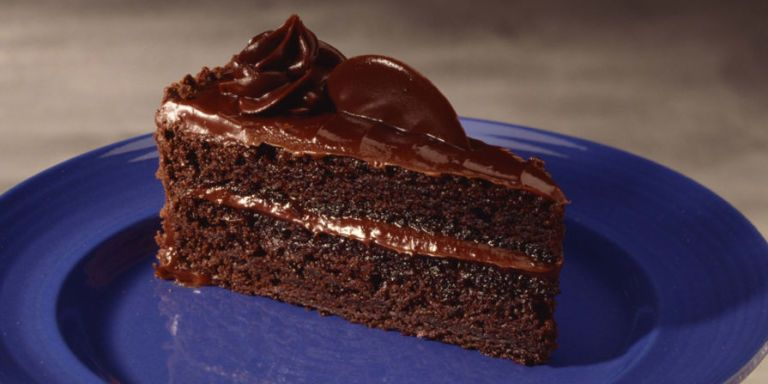

Chocolate Cake

The Best Chocolate Cake Recipe! A one bowl chocolate cake recipe that is quick, easy, and delicious! Updated with
gluten-free, dairy-free, and egg-free options!
The best chocolate cake recipe. Ever? There are plenty of claims for the best chocolate cake recipe. I get that.
But with one bite of this decadent, moist chocolate cake with chocolate frosting, every single person around the
table commented that this was the best chocolate cake they had ever tasted.
Chocolate flavour oozes all through this cake even though it is only made with cocoa powder, like our very own
Fudgy Chocolate Cake. With a crumb so incredibly tender, this cake stays moist for a good 4-5 days.
Ingredients:
- 3 cups all-purpose flour
- 3 cups granulated sugar
- 1 cups unsweetened cocoa powder
- 1 tablespoon baking soda
- 1 teaspoons baking powder
- 1 teaspoons salt
- 4 large eggs
- 1 cups buttermilk
- 1 cups warm water
- 1 cup vegetable oil
- 2 teaspoons vanilla extract
Directions
- Preheat your oven to 350°F (176°C). Lightly grease three 9-inch cake rounds or dust with flour or cocoa powder.
- In a large mixing bowl, mix together the flour, sugar, cocoa, baking soda, baking powder, and salt in a stand
mixer using a low speed until combined.
- Add the eggs, buttermilk, warm water, oil, and vanilla. Beat on a low speed until smooth, scraping the sides and
bottom of the bowl to ensure everything is mixed in.
- Divide the batter evenly among the three prepared pans, about 3 cups per pan. Tap the cake pans gently on the
counter to allow any bubbles to rise to the top and escape.
- Bake for 30-35 minutes in a 350°F (176°C) oven until a toothpick inserted into the center comes out clean.
- Cool the cakes on wire racks for 15 minutes, then remove them from the pans and place them on the wire racks to
cool completely.
- Frost with your favorite frosting and enjoy!
Back to the Top
Return to Main Page